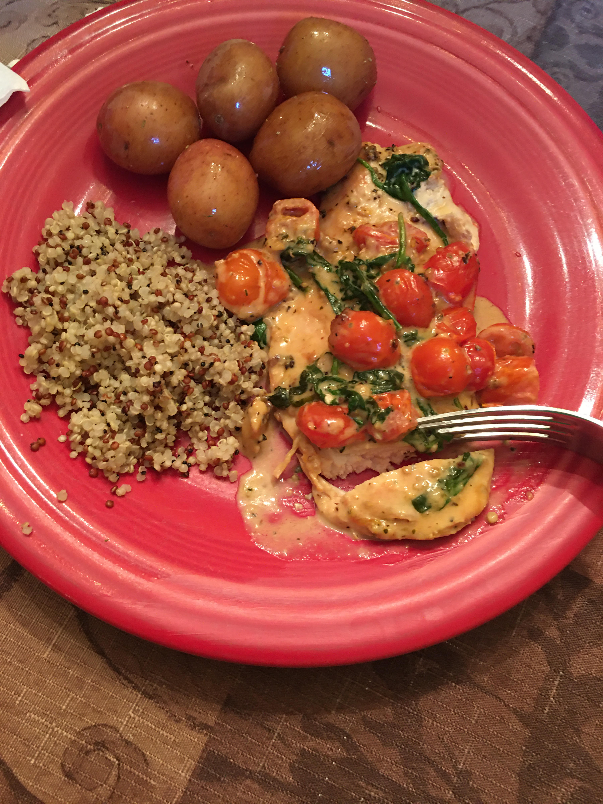

Creamy Tuscan Chicken Recipe
lactose intolerents stear clear!
This cheesey weeknight dish tastes just like a trip to Italy. The way the heavy creamand parmasan meld into the seared chicken breasts insure that you won't be having leftovers! of course, you could always make more servings, which is what I recommend. Buon cibo!
Ingredents
- 4 tablespoons of butter
- 4 chicken cutlets
- salt and pepper
- 4 teaspoons of ground oregano
- 4 garlic cloves, minced
- 1 cup of cherry tomatos, sliced in half
- 2 cups of baby spinach
- 2 cups of heavy cream
- 1/2 cup of parmasan
Steps
- Turn flame on high on oven for two skillets. Put a tablespoon of butter on each skillet until butter melts.
- put 2 chicken cutlets on each pan, putting salt, pepper, and 1 teaspoon of oregano on each cutlet.
sear each side until golden brown, about 8 minutes, putting salt, pepper, and oregano on seared side when flipped.
- remove cultets from pan, turning flame to medium. put remaining teapspoons of butter on pans and sear garlic until fragrant.
- add cherry tomatos to pan until they are about to burst. add spinach to pan until it is about to wilt.
- pour a cup of heavy cream into each pan, along with pamasan. add chicken back into pans and reduce heat to simmer.
- simmer for 8 minutes, then put contents of pan into glass tuperware and serve.
